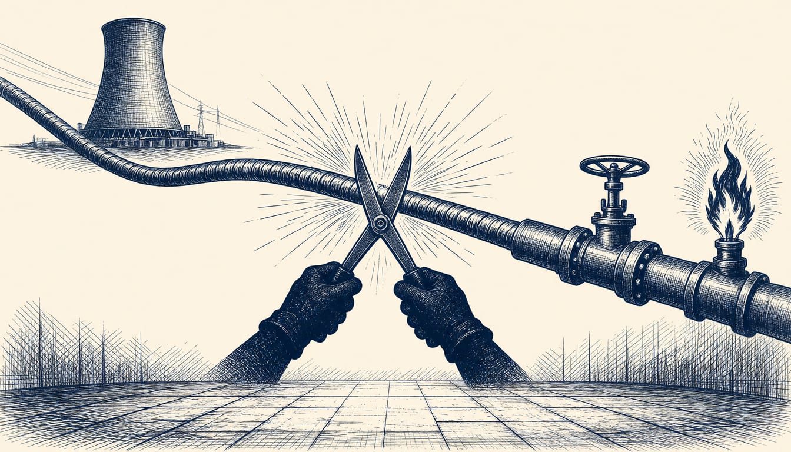

Slovak president calls for electricity prices to be cut from gas
Peter Pellegrini made the case after talks with Emmanuel Macron in Paris, as the EU debate over electricity market reform continues.

Slovak President Peter Pellegrini has said energy prices should not be tied to very expensive natural gas. He said this after bilateral talks with French President Emmanuel Macron at the Elysee Palace in Paris on 11 November.
In 2022, electricity prices across Europe rose with gas prices even in countries where gas plays almost no role in power production. That shock reopened the debate on decoupling, and calls for a fundamental change of market design followed.
Slovakia is not dependent on gas for generating electricity, he said. For that reason he considers it illogical for the electricity price to be derived from the gas price. The Slovak regulator ÚRSO has joined the discussion about how the European electricity price is formed.
The Paris talks also covered nuclear energy. Pellegrini said Slovakia and France stand "in one boat" on the matter. He said Slovakia should cooperate with France more intensively in future, and that Macron had shown strong interest in such cooperation. France could become a partner for Slovakia in nuclear fuel supplies, Pellegrini said. That pairing matters because gas accounts for roughly 10 per cent of Slovak electricity generation against about 20 per cent across the EU, as energie-portal has reported.
Brussels reform project
The European Council presented the reform project on 17 October 2023. It promotes long-term contracts to give investors stable signals and protects consumers from short-term fluctuations, Sfen reported on 13 November 2023. That project opened to nuclear the investment options previously used for renewables, Sfen has reported.
France, Spain and Greece say a fundamental reform of the electricity market is needed, as Energie-portal has reported. A French Senate report put the bill for the national tariff shield at 24 billion euros for 2022 and 2023. Without it, prices for French consumers would have jumped 35 per cent in 2022 and 100 per cent in 2023, according to estimates by the regulator CRE reported by Sfen in November 2023.
Germany, the Netherlands and the Nordic countries defend merit order pricing as the basis for the efficient functioning of the interconnected market, as Energie-portal has reported. Gas set the electricity price in more than 63 per cent of EU trading hours in 2022. In November 2023, the regulator ACER had estimated that economic optimisation of electricity production across Europe brought 34 billion euros in benefits in 2021.
Council compromise called victory
The Council settled on a reform of the electricity market, and the French government called it a European victory and a French victory, as Sfen reported. Agnès Pannier-Runacher, the French energy minister, said at the time that the compromise gives member states leeway to act according to their own energy mix.
The debate over the mechanism that ties gas and electricity prices remains open. Energie-portal reports the crisis continues, fed by the Middle East conflict. And Macron declared in late September 2023, as Sfen reported, that France would take back control of its electricity price, with or without a European decision.